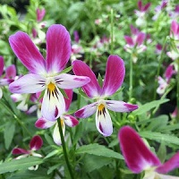
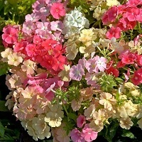
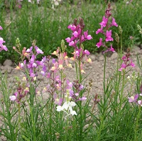
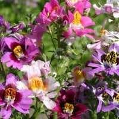
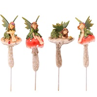

| Item |
Description |
|  |
Viola Bunny Ears: These charming flowers are a favorite of children and easy to grow.
The petals are in the shape of bunny ears.
It is a compact and bushy plant, ideal for a fairy garden in a pot.
They bloom all summer long and can grow in part sun (early morning is best) with
shade in the afternoon. (Annual) |
 |
Love-in-a-Mist (Nigella, Persian Jewels): These have airy, semidouble flowers in shades of blue, pink and white.
The seed pods are quite large and puffy, surrounded by a web effect, hence its common name, Love-in-a-Mist. Very easy to grow
from seed. (Annual)
|
|  |
Phlox Coral Reef (Phlox drummondii): Sunset pastel shades in a short 10" phlox
with blooms all summer. Perfect for a fairy garden and easily grown from seed.
These are not the tall 3' garden phlox that most are familiar with! (Annual)
|
|  |
Linaria Neon Lights: Looking like miniature snapdragons, linaria, more commonly known as toadflax ,
is the perfect plant for small gardens. Very easily grown from seed and
blooming all summer in bright colors, they look like little fairy lanterns! (Annual)
|
 |
Phlox Pop Stars: Another excellent annual phlox, very easy to grow from seed.
Blooming in bright pinks, purples and whites, the plant stays only 10" tall,
making it the perfect fairy garden flower. The blooms look exactly like little multi-pointed
stars! Blooms all summer long. (Annual)
|
|  |
Schizanthus Tinkerbell mix: More commonly known as Poor man's orchid . Schizanthus Tinkerbell conjures
up images of flowers for a fairy the size of Tinkerbell, which is exactly what they are. Although the flowers are petite
the plant can grow about 12" tall. The flowers look like miniature orchids, hence the common name. (Annual)
|
|  |
Mushroom Fairies: These fairies are made from polymer clay and will withstand the elements
if set outside in a fairy garden.
|